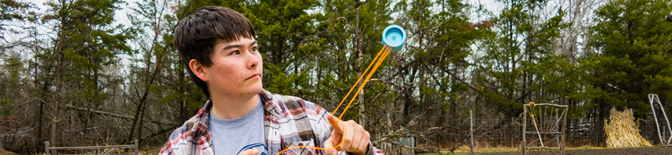

As you know, my name is Sam, and my main interest/hobby is computers! I enjoy doing almost anything related to computers: using them, fixing them, tinkering with them, and learning more about them. Some of my other hobbies include biking, Yo-Yoing, building things, spending time outdoors, youth-group/church activities, and lots of other things. I will be finishing college and high school at the same time, because I took college instead of high school the past two years (PSEO). You can learn more about me by visiting the education page, my blog, or any of the social network sites I'm on.